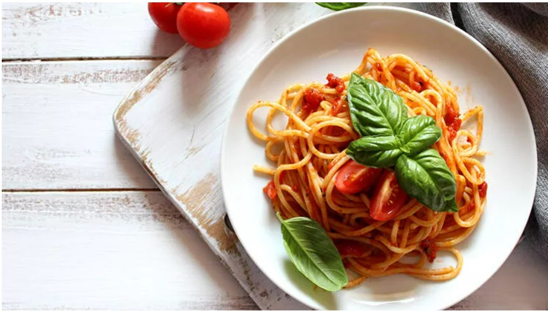

Domatesli Makarna Tarifi

Tarif İçin Gereken Malzemeler:
- Yarım paket makarna(İstenen çeşit)
- Yarım çay bardağı zeytin yağı
- 1 yemek kaşığı salça
- 2-3 adet domates rendesi
- Yarım çay kaşığı tuz
- Üzerine serpmek için fesleğen
Domatesli Makarna Nasıl Yapılır?
- Makarnayı haşlamak için suyu kaynatalım.Makarnayı ekleyip haşlamaya bırakalım.
- Makarnanın sosu için bir tavaya yağı ekleyelim.
- Ardından salçayı ekleyip kavuralım.
- Rendelenmiş domatesleri ekleyip domatesler suyunu çekmeye başlayıncaya kadar kavuralım.
- Hazırladığımız sosa 1-2 kepçe makarnanın haşlama suyundan ekleyelim.Tuzunu ve sevdiğimiz baharatları ekleyelim.
- Haşlanan makarnayı süzüp sosa ekleyelim ve karıştıralım.
Afiyet olsun!:)